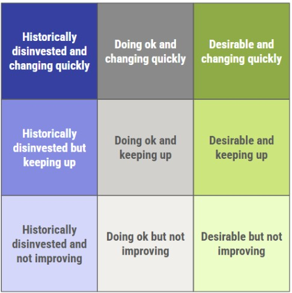

Comprehensive Housing Study
Comprehensive Housing Study
 Comprehensive Housing Study
Comprehensive Housing Study
This dashboard supports the City of Muskogee's Comprehensive Housing Study, conducted by CommunityScale on behalf of the City's Economic Development Department.
The City of Muskogee’s Economic Development Department has commissioned this housing study to assess current housing conditions, identify needs, and recommend strategies for future development. The outcome will guide policy decisions and housing strategies to enhance the community’s quality of life.


Muskogee has been gradually losing households over the past decade. Without new action, this trend is likely to continue.
However, the broader region is experiencing significant positive growth. With the right policy interventions and strategic investments, Muskogee could capture a share of this regional growth and turn the corner toward building its housing supply and household population again.
Even after prices and interest rates jumped post-Covid, Muskogee remains an affordable place to buy a home for most local households.
As the table illustrates, a household earning the median income (estimated at $52,722 in 2025) can comfortably afford the price of a typical home on today’s market in the city.
Housing within Muskogee is considerably more affordable than in other parts of the county or the greater Tulsa region.
Muskogee’s household population has gradually declined over the past decade and is on track to continue doing so. However, this seems driven at least in part by the fact that the city loses an average of 100 units per year to vacancy and demolition.
By reversing this trend toward a stable or growing housing stock, Muskogee would likely see household population rise again, especially given the region’s strong demand for new housing.
The vast majority of Muskogee’s current housing stock was built in prior decades, especially between 1950 and 1990. Recently, the city has added fewer units per year than it has lost.
There is significant competition for housing affordable to lower-income households in Muskogee. Adding more housing at all price points would help reduce this competition and preserve affordable prices. In general, communities that build new housing at faster rates tend to experience slower increases in local housing costs than those that build slower.
Households are cost burdened when paying more than 30% of their income on housing costs. They are considered severely cost burdened when these costs exceed 50% of their income. For renters, this includes lease rent and utilities. For homeowners, this includes mortgage costs, property taxes, insurance, utilities, and any condo fees.
Muskogee benefits from significant federal support to help house low-income households. However, the Housing Authority reports up to 200 Housing Choice Vouchers remain unused because local landlords are unwilling to accept them. If this trend continues too long, HUD may begin revoking portions of unused vouchers.
While some people commute longer distances, most of the people who work in Muskogee live within or just outside the city. The most popular neighborhoods outside of Muskogee are concentrated in Fort Gibson and the Hilldale school district.
Muskogee does not have enough available housing to attract more of these households into the city.
Especially on the east side, many of Muskogee’s neighborhoods are at least as stable and desirable as those in competing neighborhoods just outside the city line. This market strength represents a solid foundation to build from as Muskogee seeks to attract more people, families, and local employees to live in the city.
The neighborhoods in Muskogee that are less competitive in today’s market represent inventories lower-cost housing and vacant properties that could be systematically renovated and rebuilt over time to provide a renewed supply of quality, attainable housing stock.
Housing and neighborhood assessment.
The Muskogee region is expected to grow by about 1,725 households over the next 10 years. About 1,500 of these net-new households earn annual incomes above $80,000, making them particularly equipped to pay market rate prices for new houses and apartments.
Muskogee should strategically position to attract a share of this new growth, especially the higher-earners who can help support new development of market rate housing.
Muskogee should take steps to tap the region’s current growth wave and reverse its household decline toward a decade of renewed growth.
600 net-new units by 2030
Reverse the tide: Gradually transition from losing 100 units annually to gaining 175 units per year.
1,500 net-new units by 2035
Hit a new stride: Maintain a new pace of at least 175 net new units per year.
This list of barriers to housing access and production is informed by the study’s detailed analysis and stakeholder focus group discussions. New policies and investments on the part of the City and other stakeholders should be designed to confront these challenges.
Land and infill challenges
Little publicly owned land
Disinterested private owners
Development risk
Limited developer pool
High development and financing costs
Rising construction costs
Low price expectations
Elevated mortgage rates
Increased financing costs
Constrained public resources
Unused vouchers
Limited municipal funding
Competition from other communities
School preferences
Commuting distance
Perception challenges
The following recommendations are designed to confront the barriers to housing production and capture the growth and market opportunities available to Muskogee over the next several years. These are explained in more detail in the Recommendations section of this study, including an analysis of their relative cost, priority, and the City or stakeholder agency that could be tasked with leading each.
Launch a marketing campaign to promote Muskogee to developers.
Invest in resources, programs, and institutions that enhance Muskogee’s overall quality of life.
Promote housing in and around downtown
Encourage infill development in Old Township neighborhoods
Leverage the City’s incentive fund to catalyze more infill development opportunities.
Maximize access to existing affordable housing inventory and resources.
Catalyze new housing development in Muskogee’s suburban periphery.
The City of Muskogee Welcome to Muskogee, where opportunity meets community. Located at the crossroads of major highways and rail lines, Muskogee offers a prime location for businesses looking to expand or relocate. Muskogee is known for its affordable cost of living, excellent schools, and a thriving cultural scene that blends history, music, and outdoor recreation. Whether you're an entrepreneur, a skilled worker, or someone looking to invest in a promising community, Muskogee is the place to grow, live, and thrive.
CommunityScale is a pioneering urban planning and spatial data analysis company serving clients across the United States. Follow us on LinkedIn and X.